v44 下書きのひな形を、書くときと同じ画面で作る
先生の声：実際に書く時と同じように書くことは出来ないですか？
2つの案から1つ選んでください（おすすめは案A）。
画面は本物の学生用ツールと管理ページに、案の部分だけ書き足して写したものです（絵を押すと大きく見られます）。
見本は「映画・舞台衣装デザイナー コース」のひな形（2026年度の初期値）。
いまのひな形の作り方

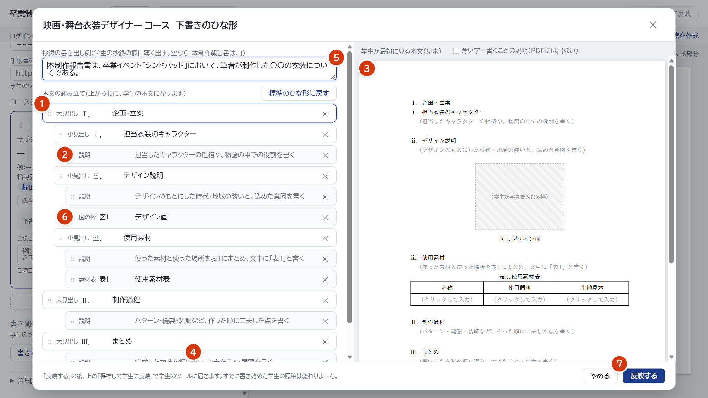
1366×768（番号のない絵）
- 紙面ではなく、入力欄が縦に並んだ一覧。
でき上がりの形が見えません。 - 「説明」が、学生に薄い字で見せる文だと
分かりにくい。 - 左で書いて、右の見本で確かめる。
目が行ったり来たりします。 - 足すボタンは、一覧のいちばん下。
どこに入るか（選んだ行の下）も見えません。 - 抄録の書き出し例は、いちばん上の小さな欄。
抄録のページでの見え方が分かりません。 - 「図の枠」「素材表」「説明」など、
学生の画面と、言葉も道具も違います。 - 「反映する」を押しても、まだ学生に届きません。もう一度、上の「保存して学生に反映」が要ります。

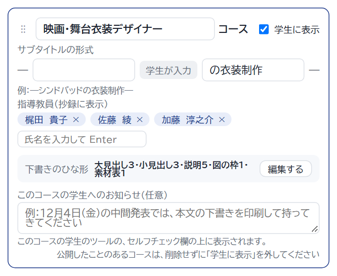
コースのカード。「編集する」は小さなボタン
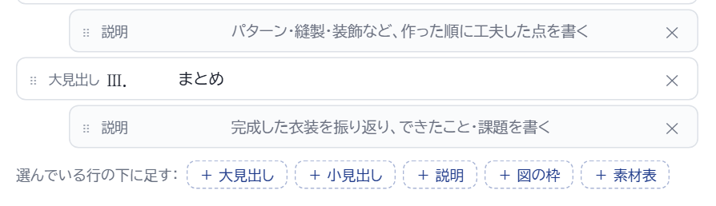
④ 足すボタン（一覧を下まで動かしたところ）学生は紙面に直接書きますが、先生は別の形の画面でひな形を作っています。
この差が、分かりにくさのもとです。
2つの案
① 管理ページから開く

コースのカードのボタンを
ひな形を作る画面を開く（新しいタブの印つき）に。
押すと、新しいタブで学生のツールが開きます。管理ページのタブは、開いたままにしておきます。
ひな形の一行の数え方も、学生の言葉に合わせます（大見出し・小見出し・図・素材表）。
② ひな形を作る画面（パソコン 1366×768。表示は「拡大」）


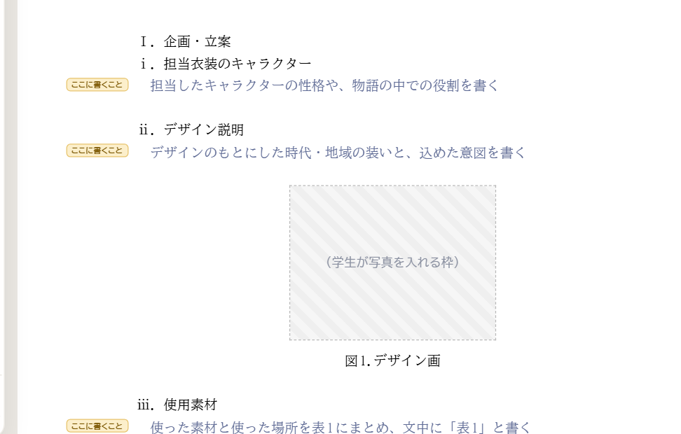
近くで：本文の字は、学生に見せる薄い字と同じ色。紙の左の余白に「ここに書くこと」の札

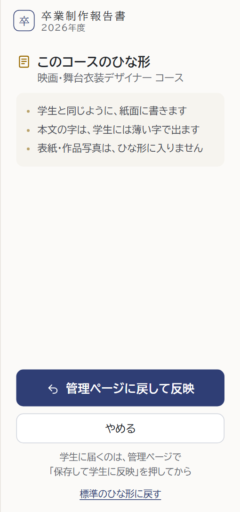
右の欄：セルフチェックの代わりいちばん上の帯：
ひな形を作っています：映画・舞台衣装デザイナー コース（学生の画面ではありません）
左の道具は学生と同じ（大見出し・小見出し・改ページ・図を入れる・表を入れる）。見出しは、紙面の上で押して、そのまま直します。
図の枠は「（学生が写真を入れる枠）」、素材表の中は「（学生が書く）」。
ページの一覧では、表紙と作品写真に「ひな形に入らない」の札。チェックの赤い印は出しません。
③ 先生が「ここに書くこと」を書く → ④ 学生には、こう見える


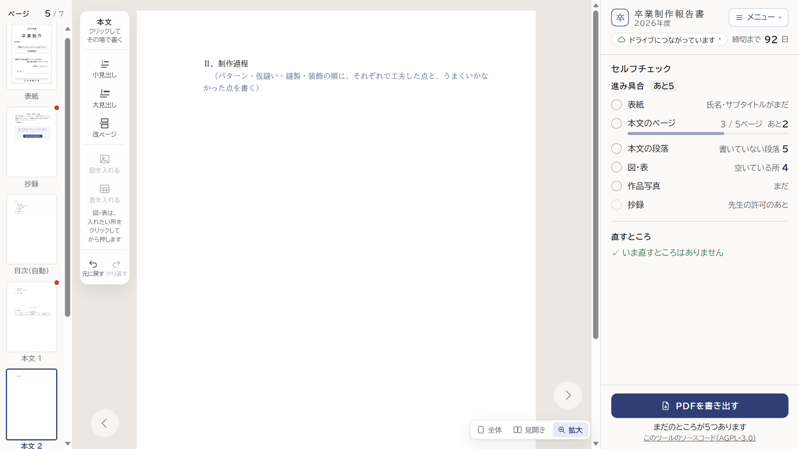

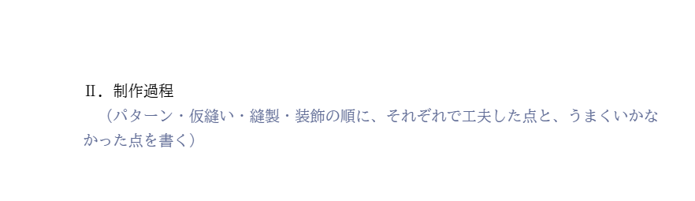
学生（管理ページで保存したあと）：空の段落に、薄い字で「（…を書く）」。押すと消えて、すぐ書けます（いまと同じ。本物の学生の画面）⑤ 表を入れる ／ ⑥ 抄録の書き出し例 ／ 表紙

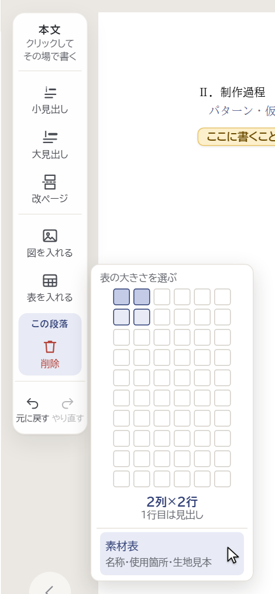
「表を入れる」で素材表（学生と同じメニュー）
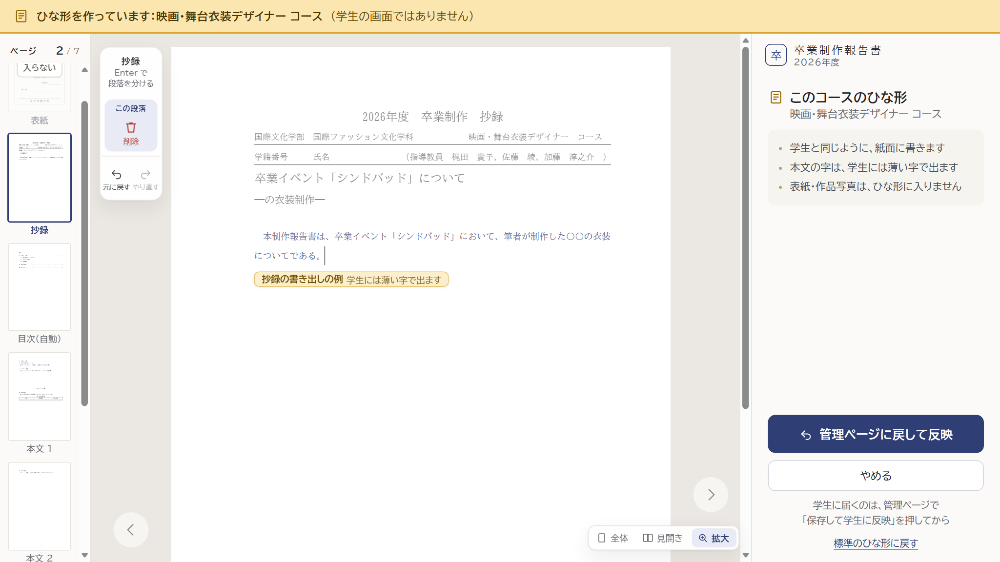

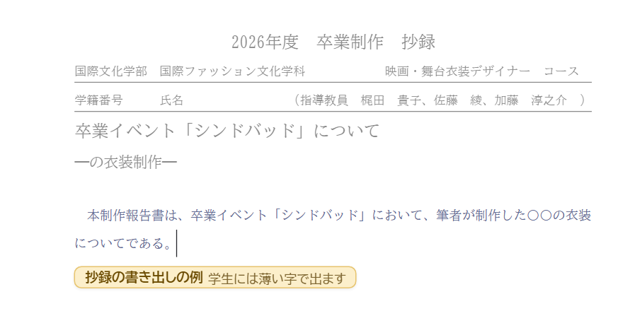
抄録のページの上で、書き出しの例をそのまま直す。上の欄（年度・学籍番号など）は自動か学生が入れる所なので、薄く
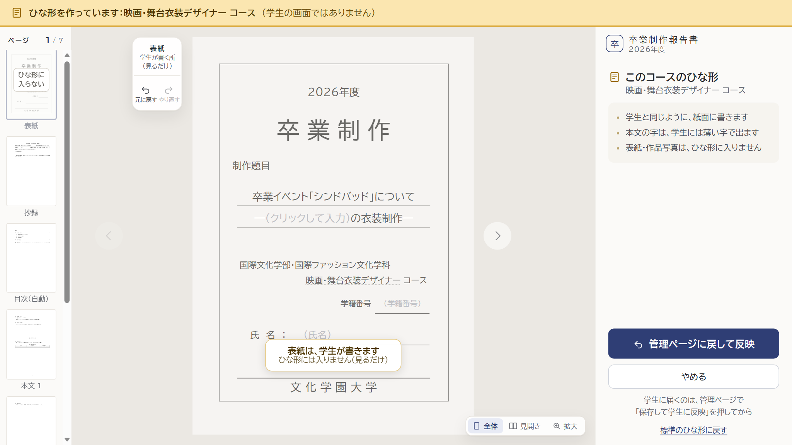
表紙は見るだけ。紙面に「表紙は、学生が書きます」
⑦ 「管理ページに戻して反映」を押したあと（管理ページ）


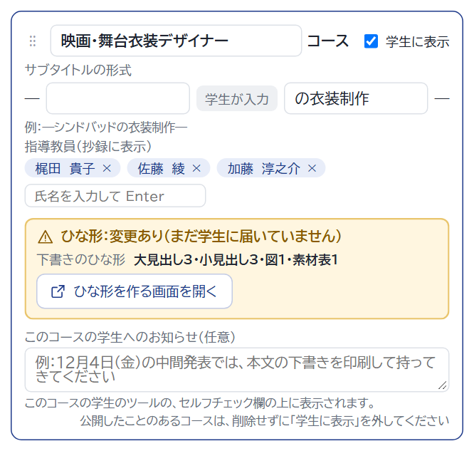
コースのカードにひな形：変更あり（まだ学生に届いていません） ひな形のタブは閉じ、管理ページに戻ります。上に「ひな形を受け取りました」（数秒で消えます）。画面の下の帯は、v43 で考えている帯と同じ形です。
よいところ
- 学生と同じ画面・同じ道具。新しく覚えることがない。
- ページの区切り・図や表の大きさまで、でき上がりのまま見える。
- 抄録の書き出し例も、抄録のページの上で直せる。
弱いところ
- タブが2つになる（管理ページを閉じないでおく）。
- タブからタブへひな形を渡すしくみを、新しく作る（本番の Google の上で、先に試します）。
- 表紙など、ひな形に入らない所の見せ方に、少し工夫が要る。
パソコン（1366×768）

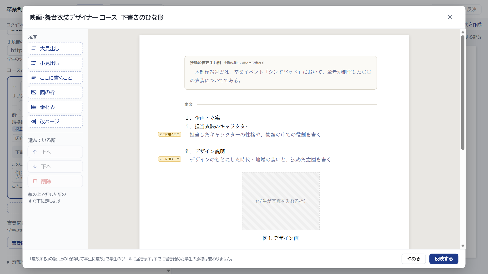
開いたところ：紙のいちばん上に、抄録の書き出し例の欄
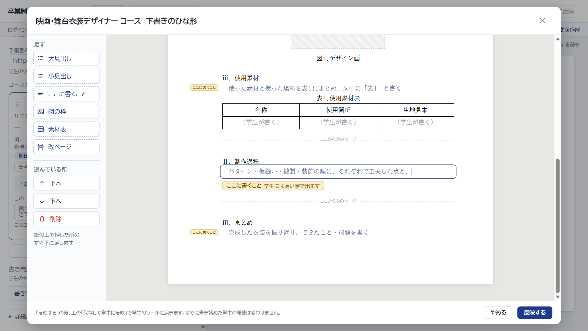
書いているところ：押した段落に枠。左の「選んでいる所」で上へ・下へ・削除近くで ／ 学生の画面とのちがい

- 1枚の長い紙。ページの区切りは線だけ（ページ番号・目次・表紙は出ません）。
- 道具は管理ページ用。学生の道具とは、形も言葉も別です。
- 抄録の書き出し例は、紙のいちばん上の別の欄。
- 字の大きさや行の折り返しは、だいたい（学生の紙面と少しずれることがあります）。
よいところ
- 管理ページの中だけで済む。タブの行き来がない。
- 戻すしくみは、いまの「反映する」のまま。作る手間は案A より少なめ。
弱いところ
- 学生の画面に「似ている」だけ。道具も言葉も、学生とは別のもの。
- ページの区切りが見えず、でき上がりと少し違う。
- 学生のツールと管理ページに、書く画面が2つ。直すたびに両方の手入れが要る。
どちらの案でも同じ：ひな形に入らないもの
- 表紙の学生の項目（氏名・学籍番号・サブタイトルの学生が入れる所）。
- 作品写真のページと、引用・参考文献。
- 図の写真と、素材表の中身。
入るのは、図の枠・表のタイトルだけです。 - 本文に書いた字は、すべて「ここに書くこと」（薄い字）になります。
学生の文章として、最初から入れておくことはできません。 - すでに書き始めた学生の原稿は、変わりません（いまと同じ）。
案A のしくみ（参考）
- 管理ページは Google の上、学生のツールは別の場所にあります。そこで、開いたままの管理ページのタブへ、ひな形を手渡しします（ブラウザの決まった方法）。
- 管理ページのタブを閉じていると、手渡しできません。そのときは、ひな形の画面に「管理ページを開いたまま、もう一度」と出し、書いたものは消しません。
- ひな形の画面で書いたものは、ドライブにも、学生の原稿にも保存しません。管理ページのまだ保存していないひな形を開くので、続きから直せます。
- 本番の Google の上で、この手渡しが動くかを、最初に小さく試します。
決めていただきたいこと
- 案A・案Bのどちらにしますか。（おすすめは案A）
- 案A のとき、ひな形の画面を新しいタブで開く（絵のとおり）か、管理ページの上に重ねて開くか。重ねて開くと、タブが増えず、戻すのも確実です。見た目は絵と同じ（いちばん上の帯と右の欄）。
- 「改ページ」と、ふつうの表（素材表でない表）も、ひな形に入れられるようにしますか。いまのひな形のしくみには、この2つがありません。入れるなら、しくみを少し広げます。入れないなら、ひな形の画面では「改ページ」のボタンと、表の大きさを選ぶ所を出しません（素材表だけ）。